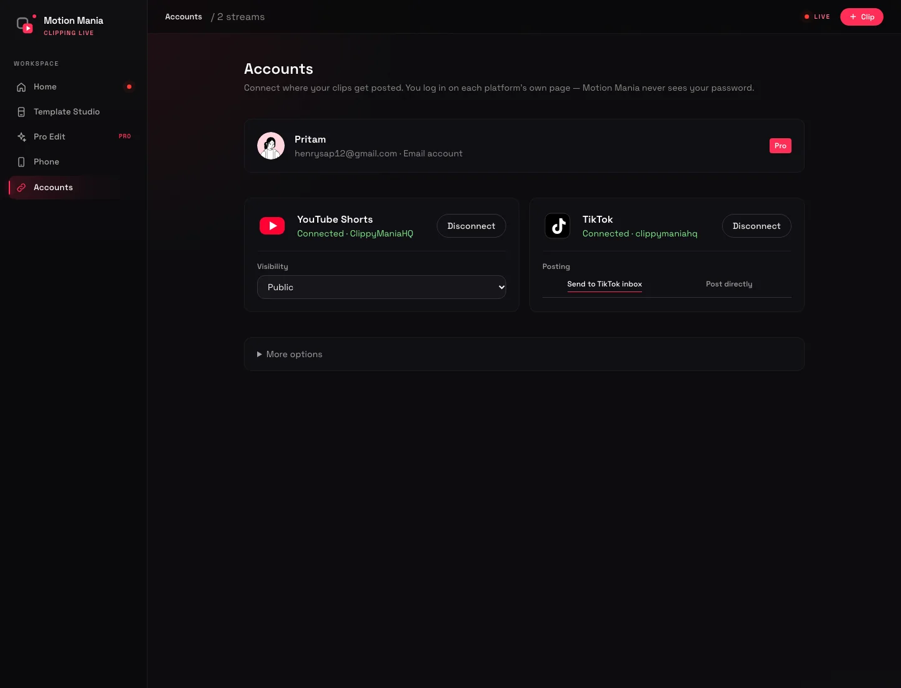

Everything it takes to post a clip every day.
Capture, detection, editing, review and publishing in one app that runs on your own computer. Here is exactly what it does — and what it doesn't.
Real-time watching
Records the live stream in rolling segments while it watches. The moment that triggers a clip, the footage is already on disk — no waiting for a VOD and no re-download.
Relative detection
Chat and audio are compared with the channel's own recent normal. The same settings work for a 3 msg/s channel and a 300 msg/s one, with no tuning.
Reaction signals
Laughter, screaming, shocked and angry faces are detected on-device. Clips are labelled funny, scream, shock, rage or hype, and that label steers the edit.
Built-in vertical layouts
Split, stack, picture-in-picture, duo, face-following full frame, fit, speaker focus and smart auto. Faces are found automatically and the crop pans with the streamer.
Word-level captions
Transcribed offline with Whisper. Words are grouped into short lines, and the active word is highlighted and scaled. Classic, punch, karaoke, typewriter and more, with clip-grade fonts.
Music that fits
Royalty-free tracks are analysed for tempo and drop. The AI picks a mood and starts the track so the drop lands on the punchline. Everything is ducked under the voice.
The clip-channel edit, automated.
Pro Edit is a separate layer on top of your template. It changes how the clip is cut and paced, not how it looks. Each part can be switched off.
| Part | What it does |
|---|---|
| Cut to the speaker | Watches mouth movement for everyone on screen and cuts to whoever is talking, returning to the main streamer when the other person stops. |
| Jump cuts | Silences longer than about a second are trimmed to a breath, so the clip keeps moving. |
| Punch captions | One to three word phrases, each in its own colour, popping in. The punchline is shown large and in quotes. |
| Motion | Whip-in intro, blur smear on cuts, slow push-ins, a zoom punch on the punchline and shake on the loudest hits. |
| Meme moment | One meme, only when the clip clearly fits it. The AI quotes the line it reacts to and rates the fit; a weak match is dropped. |
| Sound design | Whooshes, pops and booms are synthesised in the app, so there is nothing to license. |
| Emoji pop | The punchline's emojis pop in above it, timed to the line. |
| Title pop, beat flash & follow card | A title that snaps in, a soft flash on the loudest hits, and a follow card for the last seconds. |
Your phone is the approval queue.
Motion Mania serves a private web app from your own computer. Scan a QR code once, add it to your Home Screen, and clips arrive with a notification.
- Approve or reject with one tap
- Pick a title, change the banner, swap the music or the meme
- Watch the light 720p copy, not a 30 MB download
- Choose platforms and post
- Works over a private tunnel — no account with us required for the connection

Post it without leaving the app.
YouTube Shorts
Connect with Google, choose visibility, and approved clips upload directly to your channel.
TikTok
Clips are sent to your TikTok inbox as drafts. Add a trending sound and post from the TikTok app.
Or download
Every clip is a normal 1080×1920 MP4. Post it anywhere, or hand it to an editor.
Instagram Reels and Facebook are not supported yet. We would rather ship two platforms that work than four that half-work.
What it doesn't do
- It is not a cloud service. Your computer has to be on. That is the trade for unlimited clips and local footage.
- It watches one stream at a time in the current release. Multi-stream is next.
- It does not scan an entire VOD and return fifty clips yet. You give it a link and a time range, or it catches moments live.
- It cannot make a clip go viral. It finds the moment and edits it — the timing and the account are still yours.
- It does not decide your rights. Only clip content you own or have permission to republish.